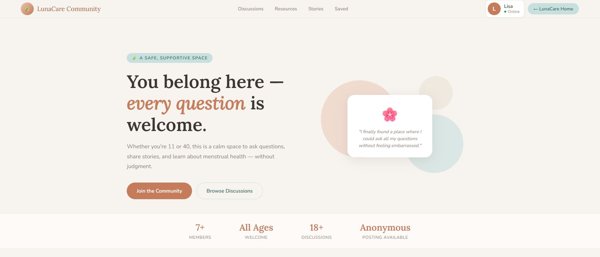
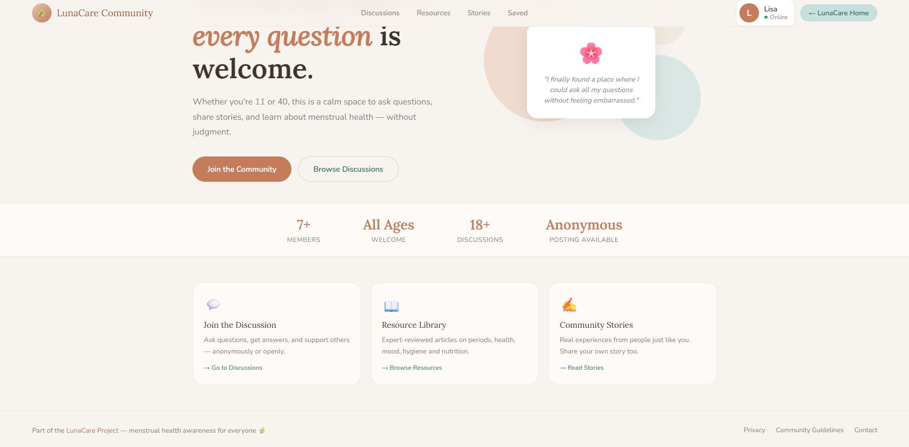
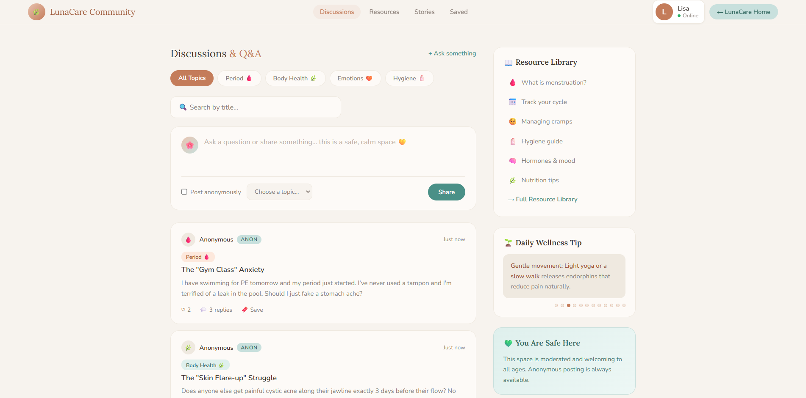
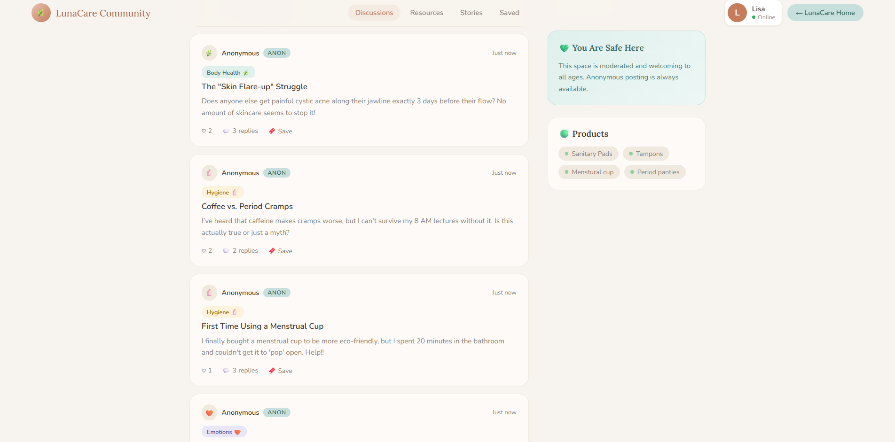
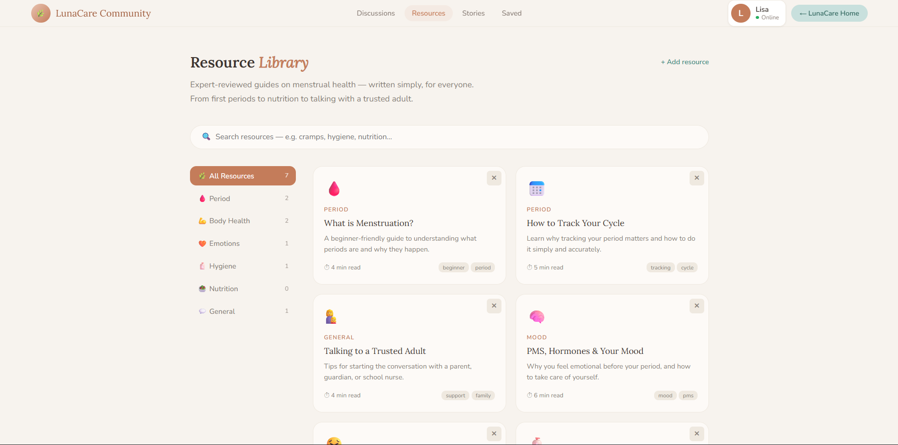
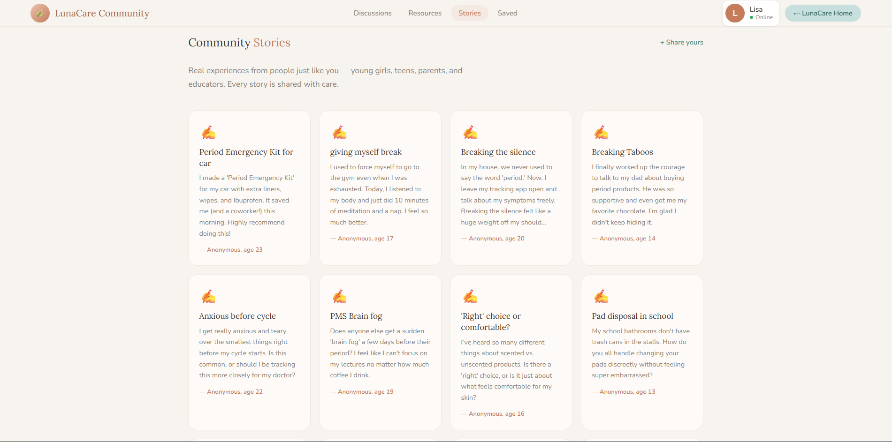

Problem
Users may feel shy, scared, or judged in health communities.
Community Platform · HCI / UX
A calm health community with anonymous posting, helpful resources, peer stories, and a softer social experience.

Overview
Users may feel shy, scared, or judged in health communities.
Make asking and reading feel safe from the start.
Users can post anonymously, browse, save, and learn.
Project Brief
Research
Many users need low social risk before they feel ready to ask a question.
Resources and stories help users build confidence before joining a discussion.
Helpful side content works best when it lives next to the main feed.
Goals
Reduce fear with anonymous options and softer entry points.
Let users browse resources and stories before they speak.
Use saved content, profiles, and stories to create a fuller loop.
Design System
Typography
Used for headers, titles, and key section names.
Used for body text, UI labels, cards, and forms.
Color Grid
HCI Process
Understand fear of judgment and need for privacy.
Use warm visuals, calm text, and trust cues.
Combine discussions, resources, stories, and saved posts.
Build homepage, feed, resource grid, and profile flow.
Check if posting, browsing, and learning feel easy.
Design Process
Focus on fear of judgment, privacy, and hesitation.
Separate discussions, resources, stories, saved, and profile.
Add safe language, soft colors, and visible support around the feed.
Make posting, browsing, and reading easier across the key pages.
Key Views
Posting is easier when social risk is lower.
Main areas: home, discussions, resources, stories, profile.
Tips and resources support users without breaking the flow.
Realtime patterns help the space feel active and welcoming.
User Flow
User sees a calm homepage with clear signs of safety.
User checks discussions, resources, or stories before posting.
User shares a question with topic help and anonymous control.
User saves content, views profile activity, and comes back later.
Wireframes
Wireframe 01
Wireframe 02
Wireframe 03
Design Decisions
Privacy is built into the core posting flow, not added later.
Resources, wellness tips, and safe-space cues reduce overwhelm.
Stories and resources help users build confidence before speaking.
Screens
Home
Belonging and safety are shown first.

Path cards
Three simple ways to move forward.

Post area
Search, filters, and anonymous posting in one view.

Feed
Readable cards with tags and low social pressure.

Resources
Users can learn before they post.

Stories
Shared stories make the space feel less lonely.
Feedback
"Anonymous posting makes it much easier to ask."
Teen user
Privacy supports confidence.
"I can read resources first if I am nervous."
First-time visitor
Reading before posting lowers pressure.
"The stories page makes the platform feel human."
Student user
Peer voices add comfort and trust.